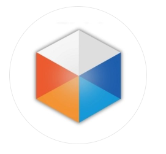
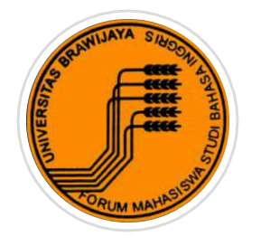

About Me
I'm a Student at Brawijaya University majoring in Information System
with a strong interest in technology development and system management.
Education
- SMP Kristen Kalam Kudus Malang
- SMA Negeri 5 Malang (MIPA)
- Faculty of Computer Science Brawijaya University
Address
PERUM. DE SALVIA B11 SUKUN TANJUNGREJO, MALANG
AGATHA JEANETTA ARIMBI PUTRI
Personal Data
| Born Date | : 22nd October 2005 |
| Religion | : Christian |
| Sex | : Female |
| Nationality | : Indonesian |
Skills
| Java Programming | : Intermediate Level |
| Leadership Skills | : Experienced as a Captain of Dance Team |
| Design Skills | : Based in Canva |
| Communication Skills | : Experienced as a Piano Private Teacher |
Organizational Experience

-
Captain of Dance Team (3DX) - 2022
This responsibility trains good leadership,
including how to manage conflict and make the right decisions.

-
Intern Staff LPM DISPLAY - 2024
Conducting interviews with sources teaches me how to communicate professionally, explore relevant information, and formulate sharp and effective questions.

-
Expert Staff FORMASI UB - 2025
As a Public Relation Staff I involved in content creation, publications, and organizational branding.
This hones creativity in creating designs, writing press releases, or managing social media.